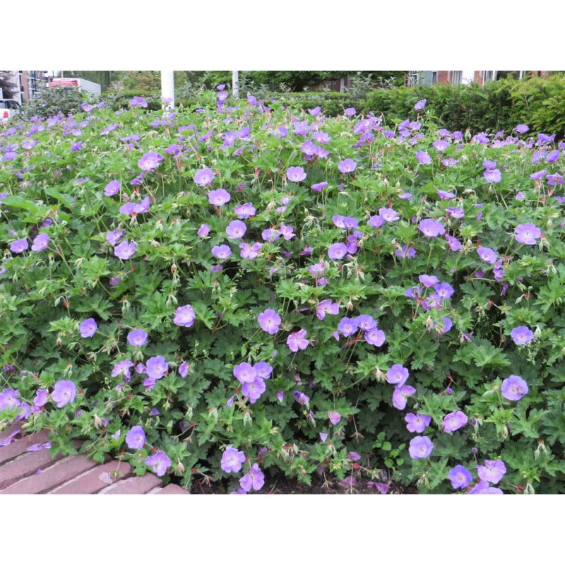

Plan — Border 1: Vervanging lavendel en herplanting¶
Perceel: nr. 5
Border: 1 — W-zijde (voortuin, grindstrook voor ramen)
Datum aangemaakt: 4 april 2026
Status: In voorbereiding
Aanleiding¶
De lavendel in border 1 is verhoüt en groeit slecht. Mos tussen de planten wijst op te vochtige, mogelijk zure grond (pH te laag voor lavendel). De border is bepalend voor het aangezicht van de voorgevel (witte muur, nr. 5). De lavendel is in april 2026 gesnoeid; de gesnoeid exemplaren worden herplaatst naar border 5.
Situatie border 1¶
- Afmeting: ~3,5 m lang × ~0,9 m breed (grindstrook)
- Zon: ⛅ halfschaduw (~4u/dag, nadruk namiddag)
- Bodem: grind bovenlaag; bodem onder grind onbekend, vermoedelijk verdicht of kleiig — mos bevestigt slechte drainage en lage pH
- Huidige beplanting: verhoüte Lavandula angustifolia (slecht groeiend), weegbree/onkruid
Ingreep 1: Grondvoorbereiding¶
- Grind opzijschuiven
- Bovenste 20 cm grond uitgraven
- Vullen met mengsel: 60% magere tuinaarde + 40% grit/scherp zand
- Optioneel: 100–150 g/m² grondverbeteraar kalk doormengen (pH verhogen)
- Grind terugleggen (max 3 cm dik)
Ingreep 2: Nieuwe beplanting border 1¶
Keuze: Geranium 'Rozanne' (ooievaarsbek)
Motivering: violet-blauwe bloemen contrasteren goed met witte gevel; verdraagt halfschaduw; bloeit juni–oktober; hoogte 30–50 cm, spreiding 60–80 cm; vaste plant, weinig onderhoud

| Eigenschap | Waarde |
|---|---|
| Hoogte | 30–50 cm |
| Breedte | 60–80 cm |
| Zon | ⛅ halfschaduw (min. 3–4u) ✓ |
| Bloeiperiode | juni – oktober |
| Kleur | violet-blauw met wit oog |
| Onderhoud | laag — terugsnijden in maart |
Plantschema:
- Aantal: 6–8 planten op 40 cm onderlinge afstand
- Plantdiepte: gelijk met kluit, niet dieper
- Na planten: goed aangieten
Boodschappenlijst border 1¶
| Artikel | Aantal | Geschatte prijs |
|---|---|---|
| Geranium 'Rozanne' (1L pot) | 8 | €4–7 per stuk → €32–56 |
| Magere tuinaarde (20L zak) | 2 | €5–8 per zak → €10–16 |
| Grit / scherp zand (25kg) | 1 | €5–8 |
| Kalkkorrels grondverbeteraar (optioneel) | 1 pak | €5–7 |
| Totaal (schatting) | €52–87 |
Ingreep 3: Herplanting gesnoeid lavendel → border 5¶
Gesnoeid lavendel: Lavandula angustifolia — exemplaren die nog voldoende groen hebben boven het verhoüte hout komen in aanmerking voor herplanting.
Bestemming: Border 5 — ZO-kant (kale plekken)
| Eigenschap | Border 5 | Geschikt? |
|---|---|---|
| Zon | ☀️ volle zon (~8u/dag) | ✅ Ideaal voor lavendel |
| Bodem | achtererf, vermoedelijk droger | ✅ |
| Ruimte | kale plekken aanwezig | ✅ |
Advies herplanting:
- Alleen exemplaren herplanten met minimaal 5–10 cm groen boven het verhoüte hout
- Plantafstand: 40–50 cm
- Bodem indien nodig aanvullen met grit voor extra drainage
- Niet te diep planten — kroon op maaiveldniveau
Border 8 (centrum) — niet geschikt voor lavendel:
Border 8 heeft slechts 2–3 uur zon per dag. Lavendel vereist minimaal 6 uur. Herplanting hier wordt afgeraden.
Planning¶
| Actie | Wanneer |
|---|---|
| Grondvoorbereiding border 1 | April–mei 2026 |
| Planten Geranium 'Rozanne' | Mei 2026 (na vorstperiode) |
| Herplanting lavendel → border 5 | April–mei 2026 (zo snel mogelijk na snoei) |
| Controle aanslag lavendel border 5 | Juni 2026 |
| Controle Rozanne bloei border 1 | Juli 2026 |
Notities¶
- Foto's border 1 (situatie voor ingreep):
fotos/zone-1.foto.2060404.jpge.v. - Mos volledig verwijderen voor herplanting
- Bij aanhoudend mislukken lavendel in border 5: mogelijk al te oud en verhoüt om aan te slaan